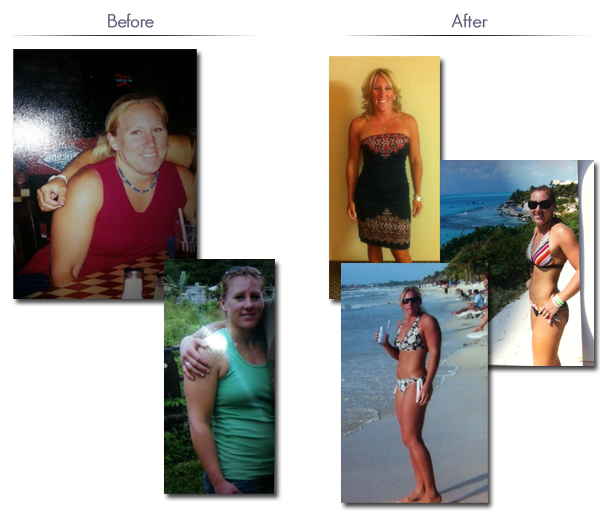

Health, Fitness and Lifestyle
Joanne Zhou, RD
Registered Toronto Dietitian
I am a Registered Dietitian with a degree from McGill University in Nutritional Sciences. My clinical nutrition training has taken place in a community health centre, ICU and Oncology Outpatient settings in a hospital, COPD rehab centre and a long-term care facility. I have a special interest area in wellness innovations and open to alternative strategies you may bring.
Born in Shanghai, raised in Tokyo and Sydney, I now live in Toronto. It was through working at a school garden that rooted me in my passion for food. Picking crisp kale and eating fresh cherry tomatoes made me appreciate healthy food and inspired my eventual study of nutrition.
What fulfills me the most is when I help others realize their dreams. Even just one small goal met can create positive changes that trickle into other areas of life. What we eat directly impacts our future health and is empowering to know we can do something about it.
Those with experience in the often frustrating world of weight loss are well aware of healthy eating. What we need most is someone to give us the tools to build habits. In this way, I see my role as more of a lifestyle coach rather than simply an educator. I will be supporting you for your whole Jump6 program. In our sessions together we will come up with small goals that grow into larger ones. Making progress no matter how small helps in growing long-term healthy habits that stick.
Other than nutrition, my interests include experimenting with new recipes, eating locally, contemporary art, photography and tennis. I have an active social media presence on topics related to nutrition and innovation. You can follow me on twitter @jwnzhou.
Specialties: weight loss, diabetes prevention, COPD, ICU, oncology, Parkinson’s, geriatrics and anemia.
Memberships: Licensed Registered Dietitian with the College of Dietitians of Ontario

Hello my name is Lindsay. I've always led an active lifestyle and have had an interest in fitness, but realized a few years ago I was not completely satisfied with my eating habits and my overall fitness level. I felt low on energy and lethargic throughout the day. I decided at that time to make a change and commit to a healthier lifestyle. I cleaned up my diet and began taking my exercise regime more seriously. I immediately began to see changes in my body shape and how my overall body felt and functioned. Being proud of the accomplishment I made in my body reflected on how I felt about myself. Taking control of this area of my life and reaching a goal I had set resulted in higher self esteem and self confidence. This also positively contributed to other areas of my life such as my relationships and my career. Realizing the satisfaction I felt, I became interested in helping others obtain their fitness goals and their desire to make a life change. In 2012 I obtained my Personal Training Certificate and began assisting others in meeting their goals. I believe a healthy lifestyle and positive self worth reflects in all areas of your life. As a shift worker myself I understand the demands work and family can put on your time. I know and have used all the excuses there are to not take the time to take care of oneself. I am very excited to get to know you and help encourage and motivate you. I look forward to helping you achieve your goals and together we can remove any obstacles preventing you from meeting them.

All results vary patient to patient.